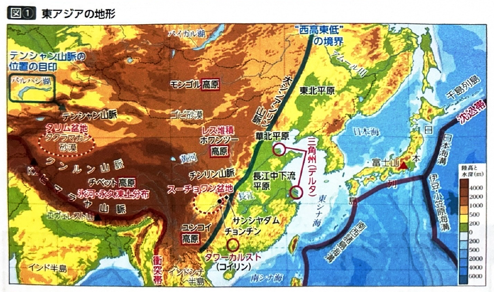
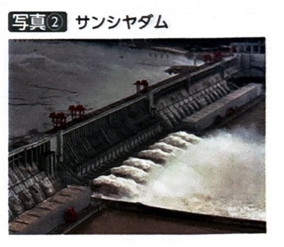
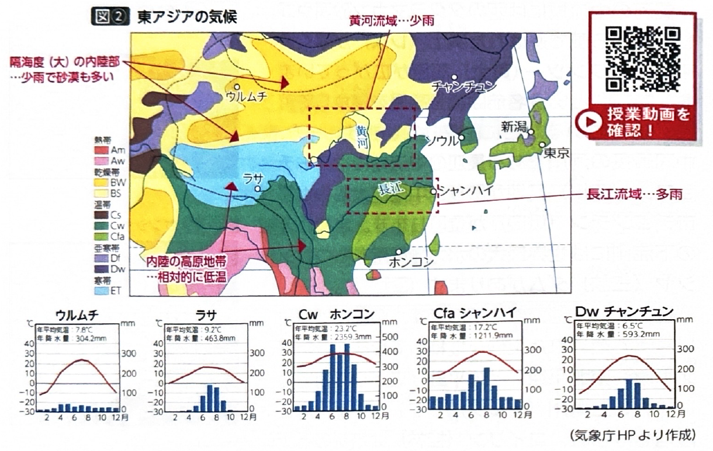
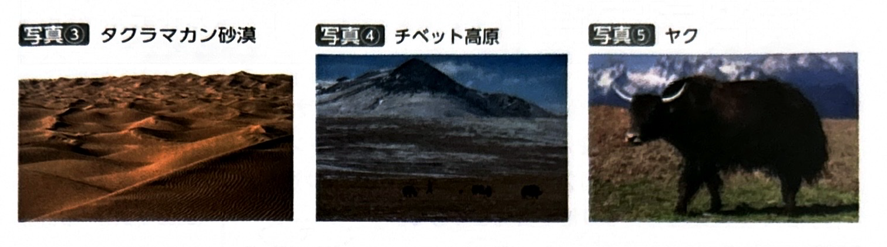
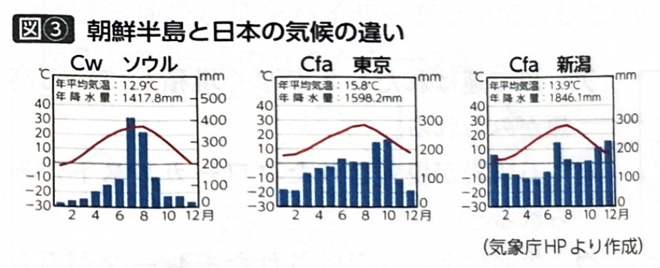

第1章 東アジア - 自然環境
ポイント総復習
1. 東アジアの地形の特徴
中国の地形は全体的に「西高東低」の形をしています。大きく西部と東部に分けて特徴を押さえましょう。
- 西部の地形：標高が高く山がちです。新期造山帯であるヒマラヤ山脈のほか、平均標高4,000m以上で氷河や永久凍土が分布するチベット高原があります。また、古期造山帯であるテンシャン山脈、乾燥したタリム盆地やタクラマカン砂漠、ゴビ砂漠が広がっています。黄河の中流域には風で運ばれた黄土（レス）が堆積した黄土高原があります。
- 東部の地形：標高が低く、平野が広がります。華北平原や東北平原があり、長江流域には四川（スーチョワン）盆地や、世界最大級の三峡（サンシヤ）ダムが位置しています。また、桂林（コイリン）では石灰岩が林立するタワーカルストが見られます。


2. 東アジアの気候の特徴
気候も地形と同様に、東部と内陸部（西部）で大きく異なります。
- 東部（沿岸部）：季節風（モンスーン）の影響を強く受けます。夏は海からの風で温暖多雨となり、冬は大陸の高気圧からの冷たく乾いた風で寒冷少雨となります。温暖湿潤気候（Cfa）や温暖冬季少雨気候（Cw）、北部では亜寒帯（Dwなど）が分布します。
- 内陸部（西部）：海から遠く水蒸気が届きにくいため、少雨となります。ステップ気候（BS）の草原が広がり、さらに内陸部には砂漠気候（BW）が分布しています。
- 南西部（チベット）：標高が非常に高いため、寒冷な高山気候（H）となり、ツンドラが見られ、ヤクの遊牧などが行われています。


3. 朝鮮半島と日本の気候の比較
朝鮮半島と日本は緯度的に近いですが、冬の気候に大きな違いがあります。
| 地域 | 冬の気候 | 特徴・文化 |
|---|---|---|
| 朝鮮半島 | 気温が低く 少雨 |
大陸に位置するため、大陸からの冷たく乾いたモンスーンの影響を直接受ける。この寒さに対応するため、伝統的な床暖房であるオンドルが普及している。 |
| 日本 （日本海側） |
気温は比較的 高いが豪雪 |
海に囲まれており、大陸からの冷たい北西モンスーンが日本海上で大量の水蒸気を含むため、山地にぶつかる日本海側に豪雪をもたらす。 |

基礎問題（理解度チェック）
Q1. 東アジアの地形について、空欄を埋めなさい。
中国の地形は全体的に「
」である。西部には平均標高4000m以上で氷河が分布する
や、タクラマカン砂漠などが広がる。また、黄河中流域には風で運ばれた土壌が堆積した
がある。
Q2. 東アジアの気候について、空欄を埋めなさい。
東アジアの東部（沿岸部）は
の影響を強く受け、夏は温暖多雨、冬は寒冷少雨となる。一方、海から遠い内陸部は水蒸気が少ないため
などが広がる。また、チベット高原は標高が高いため
となり、ヤクの遊牧などが行われている。
Q3. 日本と朝鮮半島の気候比較について、空欄を埋めなさい。
朝鮮半島は大陸に位置するため、日本に比べて冬の気温が
、少雨で乾燥する。そのため
とよばれる伝統的な床暖房が普及した。一方、日本海側は、冬の季節風が日本海上で大量の水蒸気を含むため
となる特徴がある。
Q4. 中国の東部にはタクラマカン砂漠やゴビ砂漠などの広大な乾燥帯が広がり、一方で西部には長江や黄河によって作られた広大な平野が広がっている。
Q5. 東アジアの東部（沿岸部）では、夏は海からの湿った季節風の影響で多雨となり、冬は大陸からの乾いた季節風の影響で少雨となる地域が多い。